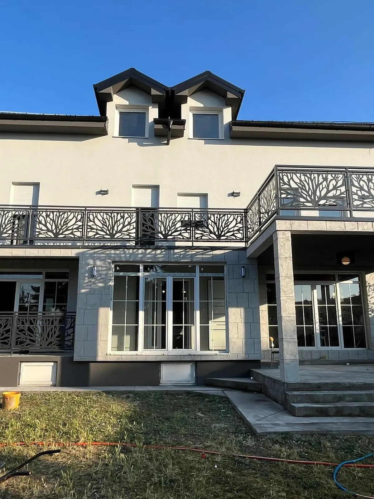

·O radionici Lux Azur
Lux Azur izrađuje metalne ograde, gelendere i kapije po meri. U radu koristimo lasersko sečenje i bravarske postupke, od pripreme crteža do sklapanja konstrukcije.
Kako radimo
Svaki posao počinje merama sa objekta. Pre izrade dogovaramo izgled, materijal, način ugradnje i rok.

Zašto laserski rezan panel
Laserskim sečenjem iz lima dobijamo šaru koja čini ispunu ograde. Odnos punih i otvorenih delova utiče na izgled, prolaz svetlosti i zaklon od pogleda.
Izabrani motiv prilagođavamo dimenzijama panela. Na crtežu određujemo položaj stubova, spojeva i rukohvata, kako bi se šara uklopila u celu ogradu.
Pogledajte galeriju →Šta dobijate
Šta dogovaramo pre izrade
Da bismo pripremili ponudu, potrebni su nam tip proizvoda, okvirne dimenzije i lokacija. Zatim sa vama prolazimo izbor šare, materijala i boje, kao i uslove za montažu.
6
grupa proizvoda za kuću, dvorište i garažu
1
ponuda sa dogovorenim obimom radova, cenom i rokom
7
motiva prikazanih na sajtu, uz mogućnost prilagođavanja
RAL
karta boja za usklađivanje ograde sa fasadom i stolarijom
Gde radimo
Spolja i unutra
Radimo na novim i postojećim objektima. Termin merenja usklađujemo sa radovima na podovima, fasadi i stolariji, jer njihove završne dimenzije utiču na ugradnju ograde.